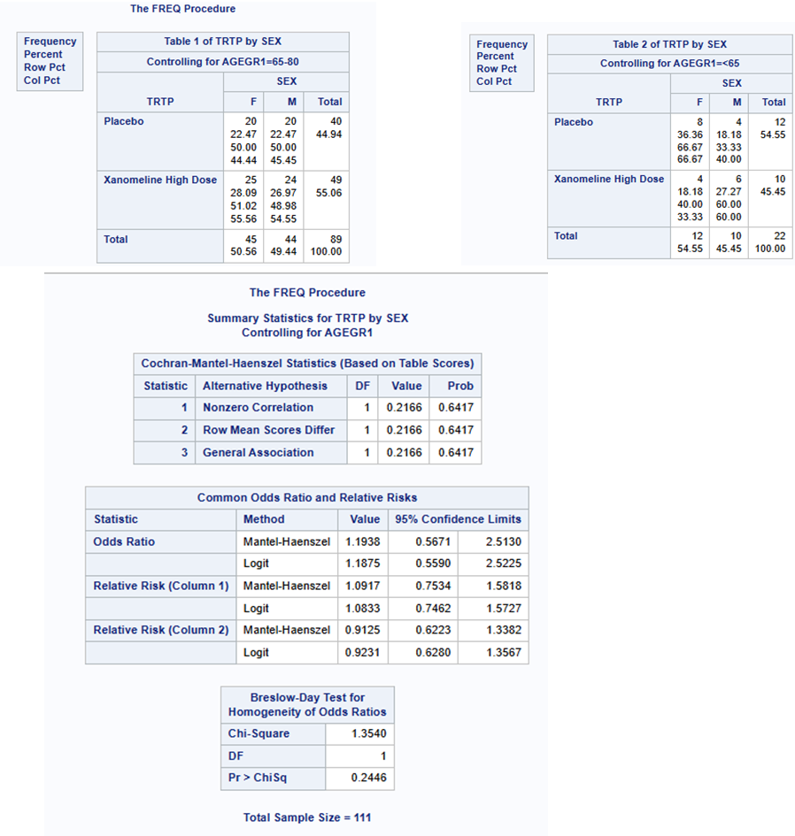
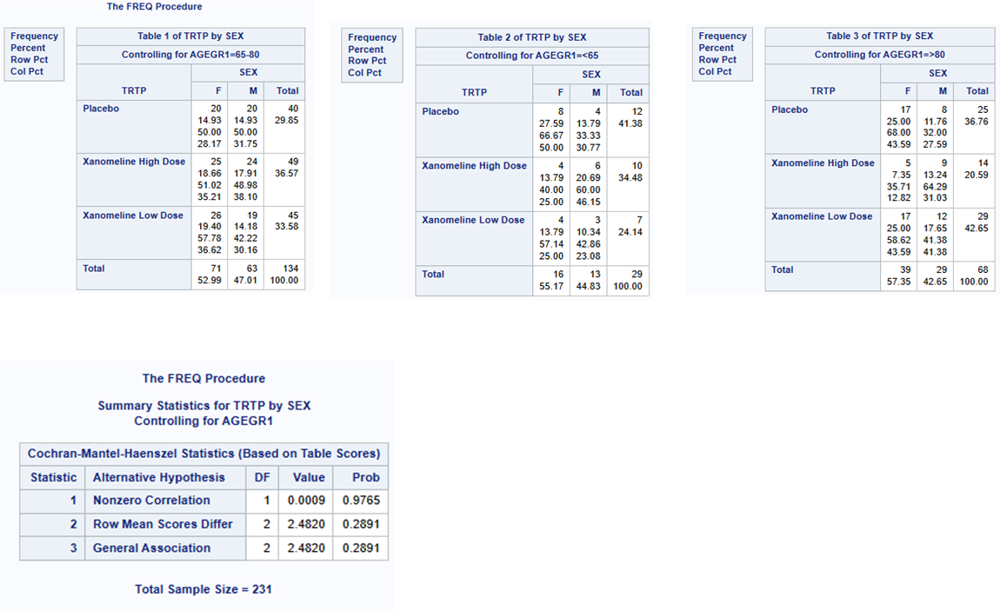
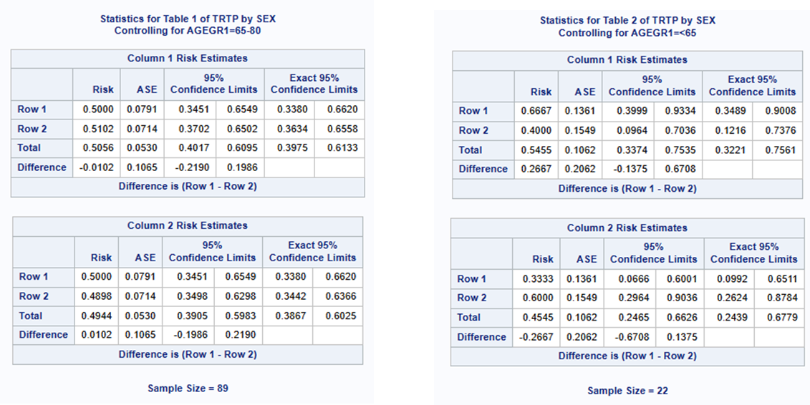
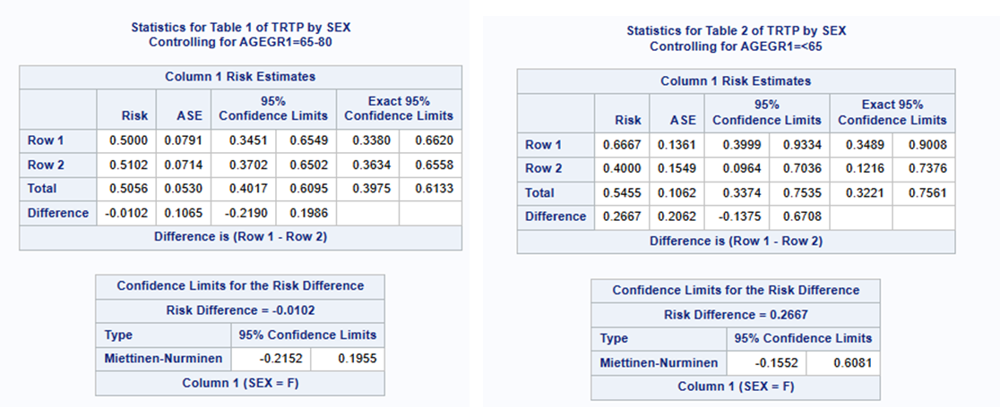
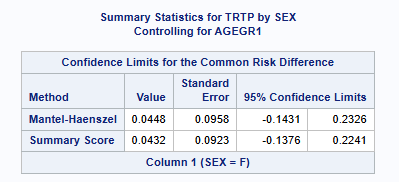
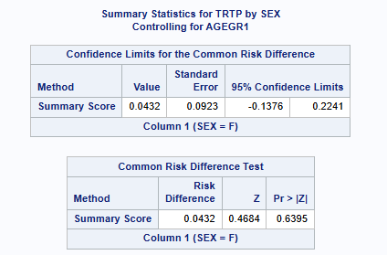
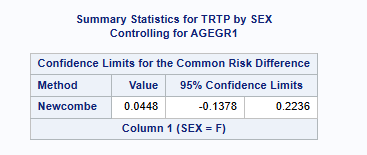

CMH Test
Cochran-Mantel-Haenszel Test
The CMH procedure tests for conditional independence in partial contingency tables for a 2 x 2 x K design. However, it can be generalized to tables of X x Y x K dimensions. This page also details derivation of risk differences and their confidence intervals which often accompany a CMH test.
CMH in SAS
The CMH test is calculated in SAS using the PROC FREQ procedure. By default, it outputs the chi square statistic, degrees of freedom and p-value for each of the three alternative hypothesis: general association, row means differ, and nonzero correlation. It is up to the statistical analyst or statistician to know which result is appropriate for their analysis.
When the design of the contingency table is 2 x 2 x K (i.e, X == 2 levels, Y == 2 levels, K >= 2 levels), the Mantel-Haenszel Common Odds Ratio (odds ratio estimate, 95% CI, P-value) and the Breslow-Day Test for Homogeneity of the Odds Ratios (chi-square statistic, degrees of freedom, P-value) are also output.
Below is the syntax to conduct a CMH analysis in SAS:
proc freq data = filtered_data;
tables K * X * Y / cmh;
* the order of K, X, and Y appearing on the line is important!;
run; Data used
The adcibc data described here is used for this example.
Code used
The code used is always the same, however, we can limit the number of levels in each example to show a 2x2x2 case, 2x3xK case etc.
proc freq data = adcibc;
tables agegr1 * trtp * sex / cmh;
run;Example 1: 2 x 2 x 2 (i.e, X = 2 TRT levels, Y = 2 SEX levels, K = 2 AGE levels)
Let’s test if there is a difference between 2 treatments (Placebo, and high dose), in the number of males and females, whilst adjusting for 2 levels of Age group (<65 and 65-<80). NOTE: prior to the proc freq, we have removed data in the low dose and >80 categories.
Example 2: 2 x 3 x K (i.e, X = 2 levels, Y = 3 levels, K >= 2 levels)
Let’s test if there is a difference between 3 treatments (Placebo, Xanomeline low dose and high dose), in the number of males and females, whilst adjusting for 3 levels of Age group (<65, 65-<80 and >=80). Here K=Agegrp1 the variable we are controlling for, X=Treatment -what we want to compare, and Y=Sex the variable we want to see if it’s different between treatments (often this would be response/ non-response!).

Example 3: Risk Differences - Comparing treatment differences within strata and combined across strata
The above examples are a test for general association or if the row means scores differ across the strata controlling for another factor, however we may want to get an estimate of the direction and size of treatment effect (with CI), either within each strata or combined across strata.
Risk Differences Within each Strata
Risk differences within each strata (for 2 x 2 x K tables) can be obtained by adding the riskdiff option in SAS. The exact same output is obtained as per example 1 above, with the addition of 2 tables (1 for each age strata), showing the proportion of Female patients within each treatment (including 95% CIs), and the difference between the treatment proportions (including 95% CIs). By default, the CI’s are calculated using Wald asymptotic confidence limits and in addition, the exact Clopper-Pearson confidence intervals for the risks. See SAS userguide here and here for more detail on the range of CI’s SAS can calculate for the risk differences such as: Agresti-Caffo, exact unconditional, Hauck-Anderson, Miettinen-Nurminen (score), Newcombe (hybrid-score), Wald confidence limits, continuity-corrected Newcombe and continuity corrected Wald CIs.
The individual treatment comparisons within strata can be useful to explore if the treatment effect is in the same direction and size for each strata, such as to determine if pooling them is in fact sensible.
# Default method is: Wald asymptotic confidence limits
proc freq data = adcibc (where=(trtpn ne 54 and agegr1 ne ">80"));
tables agegr1 * trtp * sex / cmh riskdiff;
run; 
Note above that exact CI’s are not output for the difference betweeen the treatments. You can request SAS output other CI methods as shown below. This outputs the risk difference between the treatments and 95% CI, calculated for each age group strata separately using the Miettinen-Nurminen (score) (MN) method.
# You can change the confidence limits derivation using (cl=xxx) option
proc freq data = adcibc (where=(trtpn ne 54 and agegr1 ne "\>80"));
tables agegr1 * trtp * sex / cmh riskdiff(cl=mn);
run;
SAS Common error: SAS v9.4 cannot do a stratified Miettinen-Nurminen (score) method!
Note: you may think by running the following code, that you would be creating a common risk difference using the stratified Miettinen-Nurminen method. However, this is actually performing an unstratified Miettinen-Nurminen (Score) method. The output contains the same risk differences calculated for each strata separately and then a common risk difference using the ‘summary score estimate’ approach (however this is NOT a stratified approach !!). See SAS guide for more detail.
PROC FREQ in the SAS Viya platform has introduced a new COMMONRISKDIFF(CL=MN/MNMH) option for the TABLES statement that does use the stratified MN method.
See the next section on Common risk differences available in SAS.
# Specifying the Miettinen-Nurminen (score) method
proc freq data = adcibc (where=(trtpn ne 54 and agegr1 ne ">80"));
tables agegr1 * trtp * sex / cmh riskdiff (common cl=mn);
run; 
SAS Common error: Make sure you output the risk difference for the correct level!
Including either column=1 or column=2 tells SAS which is your outcome of interest (ie, often that you want to compare treatment responders and not treatment non-responders!) By default it takes the 1st column sorted alphabetically but you can change this as shown below.
Note that if the data are such that there are no responses in either treatment group, the cross-tabulation will only have 1 column, and SAS PROC FREQ will fail to produce a confidence interval. In this unusual situation however, a valid confidence interval can (and should) still be produced, which may be obtained using the %SCORECI macro available at https://github.com/petelaud/ratesci-sas/tree/main.
proc freq data = adcibc (where=(trtpn ne 54 and agegr1 ne "\>80"));
tables agegr1 * trtp * sex / cmh riskdiff(common column=2);
run;Common Risk Differences across Strata
Proc freq can calculate estimates of the common risk difference with 95% CIs, calculated using the Mantel-Haenszel and summary score (Miettinen-Nurminen) methods for multiway 2x2 tables. It can also provide stratified Newcombe confidence intervals using the method by Yan and Su (2010). The stratified Newcombe CIs are constructed from stratified Wilson CIs for the common (overall) row proportions. See SAS help for more detail.
Note that SAS (since v9.3M2 / STAT 12.1) PROC FREQ will produce the Miettinen-Nurminen (‘MN’) score interval for unstratified datasets only. The ‘commonriskdiff’ option added in SAS/STAT 14.3 requests risks (binomial proportions) and risk differences for 2x2 tables. But doesn’t extend to stratified analysis.
Stratified Miettinen-Nurminen CIs have more recently been added to PROC FREQ, but only within the SAS Viya platform (using CL=MN or CL=MNMH in the COMMONRISKDIFF option). The only other known way to have SAS produce these CIs is to use this publicly available macro: https://github.com/petelaud/ratesci-sas/tree/main. Note that the macro (currently) does not implement Miettinen & Nurminen’s proposed iterative weights, but instead the simpler (and similar) MH weights are used.
proc freq data = adcibc (where=(trtpn ne 54 and agegr1 ne ">80"));
tables agegr1 * trtp * sex / cmh commonriskdiff(CL=SCORE TEST=SCORE);
run; 
proc freq data = adcibc (where=(trtpn ne 54 and agegr1 ne ">80"));
tables agegr1 * trtp * sex / cmh commonriskdiff(CL= newcombe);
run;
References
SAS documentation (Specification): https://documentation.sas.com/doc/en/pgmsascdc/9.4_3.3/statug/statug_freq_examples07.htm
SAS documentation (Theoretical Basis + Formulas): https://documentation.sas.com/doc/en/pgmsascdc/9.4_3.5/procstat/procstat_freq_details92.htm
Created using : SAS release:9.04.01M7P08062020”